Released on May 2, 2007
(Next Release on May 9, 2007)
Benchmark
Webster’s online dictionary defines benchmark as, “A standard by which something can be measured or judged” (see http://www.websters-online-dictionary.org/definition/benchmark). With his retirement following the 1998 football season, John Elway became the benchmark for every quarterback who plays for the Denver Broncos. Whether this is a fair benchmark is a reasonable question to ask. The same question might be asked about using West Texas Intermediate (WTI) crude oil as a benchmark for crude oil prices in the Americas. For more than 20 years, futures market prices for light, sweet crude oil for delivery at Cushing, Oklahoma have been posted on the New York Mercantile Exchange and used by traders, analysts, and the public for price discovery purposes. The crude oil used in the contract, while not specifically mentioning WTI, matches the qualities of WTI. The transparency and liquidity of this contract has generally well served its intended use as the U.S. reference crude oil benchmark for monitoring oil price movements, hedging, and establishing physical market spot and contract prices for other U.S. crude oils, e.g., Louisiana Light Sweet, Alaskan North Slope, and to a lesser extent, some foreign crude oils exported to the United States.
Nevertheless, the use of WTI as a reference crude oil has become increasingly complicated by various developments that, at times, have shifted significantly its relationship to other crude oil prices. Over time, WTI production has dropped sharply to levels currently averaging no more than 400 thousand barrels per day, a relatively thin volume to represent price movements in a 15 to 16 million barrel per day U.S. market that increasingly depends on heavy, sour crude oils.
Recently, the Cushing hub has experienced a local oversupply of crude oil, which has tended to depress the price of WTI relative to other crude oils. The surge in Canadian crude oil exports since last year, which has flowed primarily to the U.S. Midwest, and larger-than-average outages at Midwest refineries that have historically been major users of WTI crude oil, have both contributed to this situation. Moreover, WTI volumes are land locked, with insufficient pipeline capacity to adequately accommodate flows out of Cushing, which serves as the hub for the physical WTI market, as well as the delivery point for the NYMEX futures contract. In this situation, the accumulation of excess stocks in the Cushing region results in the potential for distortions in the price of WTI relative to other crude oils, despite the declining trend of WTI production. While this distortion seemingly began its evolution last year (see chart below), it reached significant levels in February 2007 when cold U.S. weather drove heating fuels demand sharply upwards. Combined with other U.S. and global supply/demand factors, crude oil prices generally rose in tandem, with relative prices, or spreads between grades, remaining roughly constant, with the exception of WTI. Between late February and the end of April, some crude oils have risen as much as $7 to $9 per barrel, with Malaysian Tapis (a key Asian light sweet crude oil) reaching the $75 per barrel level, while Brent (the European benchmark) was at $67 per barrel. While fluctuating some, WTI was near $66 per barrel by the end of April, only $4 above late February levels, resulting in record spreads or discounts to these crude oils.
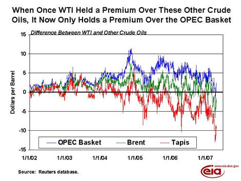
In short, tightening global fundamentals have already propelled oil prices relatively close to year-ago levels, with the exception of WTI. The surge in Canadian crude oil imports combined with extensive Midwest refining maintenance and unexpected outages this year has uniquely dampened upward pressures on WTI, as stocks at Cushing have reached near capacity levels. In particular, Valero's McKee refinery is heavily dependent on WTI and recently reported that it may be unable to operate at full capacity for the remainder of the year. Hence, at least until Midwest refineries complete maintenance and increase their crude oil demand significantly, the degree of fundamental oil market pressures already evident in low and declining stock levels is not fully apparent in monitoring WTI prices. A better measure or sense of these pressures becomes evident when focusing on the shift already seen in most other U.S. and foreign crude oil prices, say Brent.
Gasoline Prices Increase While Diesel Continues to Fall
Gasoline prices rose sharply for the week of April 30, 2007, increasing 10.2 cents to 297.1 cents per gallon. Prices are 5.2 cents per gallon higher than at this time last year. All regions reported price increases. East Coast prices were up 8.2 cents to 291.7 cents per gallon. The largest increase was in the Midwest, where prices jumped 15.0 cents to 292.5 cents per gallon. Prices for the Gulf Coast rose 9.8 cents to 285.3 cents per gallon, while Rocky Mountain prices increased 11.3 cents to 295.7 cents per gallon. West Coast prices were up 5.9 cents to 327.7 cents per gallon. The average price for regular grade in California was up 4.3 cents to reach a record price of 335.9 cents per gallon, 15.7 cents per gallon above last year's price.
Retail diesel prices fell for the second consecutive week, decreasing 4.0 cents to 281.1 cents per gallon. Prices are 8.5 cents per gallon lower than at this time last year. East Coast prices fell 3.7 cents to 280.0 cents per gallon. In the Midwest, prices were down 5.6 cents to 277.5 cents per gallon, while the Gulf Coast saw a decrease of 4.9 cents to 276.6 cents per gallon. The only region to see an increase in price was the Rocky Mountains, where prices were up 1.0 cent to 298.8 cents per gallon. Prices on the West Coast saw a decrease of 0.1 cent to 295.2 cents per gallon, while California prices fell 1.7 cents to 298.7 cents per gallon, 17.6 cents per gallon lower than at this time last year.
Propane Inventories Post Below-Average April Build
Propane inventories moved higher by 2.0 million barrels last week, pushing inventories to an estimated 27.9 million barrels as of April 27, 2007, a level that remains just below the lower boundary of the average range for this time of year. Despite the robust gain, however, the overall April stockbuild of 2.8 million barrels fell short of reaching the 5-year average stockbuild for this month of about 4.8 million barrels. Regional inventories were generally higher, except in the East Coast, where they reported a weekly decline of 0.2 million barrels. Inventory gains were reported in the Midwest with 0.6 million barrels and the Gulf Coast with 1.7 million barrels, while the combined Rocky Mountain/West Coast region was relatively unchanged. Propylene non-fuel use inventories remained unchanged last week but accounted for a lower 8.0 percent share of total propane/propylene inventories, down from the prior week’s 8.6 percent share.
Text from the previous editions of “This Week In Petroleum” is now accessible through a link at the top right-hand corner of this page.
| Retail Prices (Cents Per Gallon) | |||||||
| 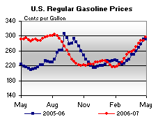 | 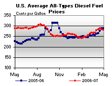 | ||||||
| Retail Data | Changes From | Retail Data | Changes From | ||||
| 04/30/07 | Week | Year | 04/30/07 | Week | Year | ||
| Gasoline | 297.1 | Diesel Fuel | 281.1 | ||||
| Spot Prices (Cents Per Gallon) | |||||||||||||||||||||||||||||||||||||||
| 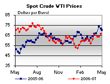 | 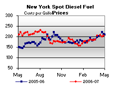 | ||||||||||||||||||||||||||||||||||||||
| 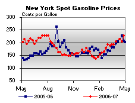 | 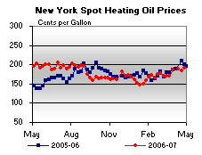 | ||||||||||||||||||||||||||||||||||||||
|
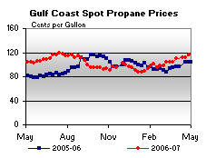 | ||||||||||||||||||||||||||||||||||||||
| Stocks (Million Barrels) | |||||||
| 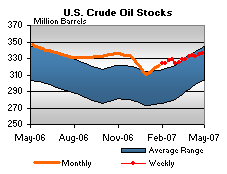 | 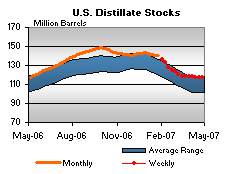 | ||||||
| 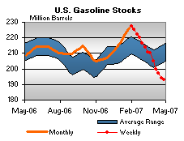 | 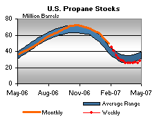 | ||||||
| Stocks Data | Changes From | Stocks Data | Changes From | ||||
| 04/27/07 | Week | Year | 04/27/07 | Week | Year | ||
| Crude Oil | 335.6 | Distillate | 117.1 | ||||
| Gasoline | 193.1 | Propane | 27.921 | ||||